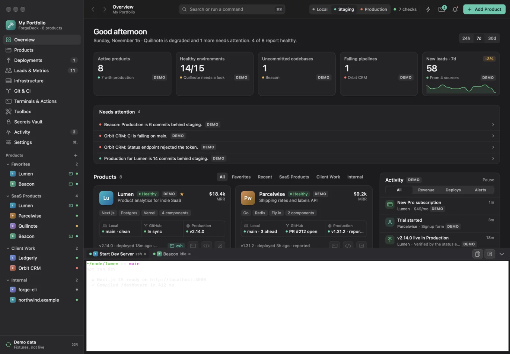

ForgeDeck Portfolio control room for macOS
Where each product's code lives, what's deployed, and how you know.
No account. No server. No telemetry. Secrets stay in your Keychain.
Parts list
| Item | Part | What it does | Detail |
|---|---|---|---|
| 1 | Products in groups | Every product in one sidebar, grouped your way. Rename products and groups, drag a product to another group, remove it without touching its files. | C |
| 2 | Evidence chain | Local, GitHub, Staging, Production for each product, each with the evidence behind it. | A |
| 3 | Play | Launches what the product builds: the simulator, the desktop app, the dev server and its page, or the local site. | B |
| 4 | Provenance | Every deployment says where the fact came from and how old it is. | A |
Detail A · The evidence chain
Production is never guessed from a green build or a main branch. Each step says how it is known, so "deployed" means something.
- Localmain · cleanVerified · read from git on this Mac
- GitHubin sync with originVerified · GitHub API
- Stagingv2.15.0-rc.2Reported · a deployment record, not checked
- Productionv2.14.0Stale · last confirmed 3 days ago
- Verified
- ForgeDeck checked it itself: git, the GitHub API, a status endpoint.
- Reported
- Something said so, like a deployment record. Not confirmed.
- Stale
- It was true. It is too old to trust now.
- Unknown
- No evidence, and the reason why.
Shown for a second demo product, mid-release, so every mark appears.
Detail B · Play
One button launches what a product builds. ForgeDeck reads the project and picks the best way in. The others stay one click away in the menu.
- MobileBuild and run on the iPhone simulator or an Android emulator
npx cap run ios --target … - DesktopStart the Mac app, Tauri app, or Electron app
./build.sh --open · swift run - WebStart the dev server, then open the page when it answers
npm run dev → localhost:5173 - SiteOpen a WordPress plugin's local site admin
http://site.local/wp-admin/
Nothing runs until you approve it. A command ForgeDeck found on its own opens for review first, and runs the moment you save.
Detail C · One click to work

- Groups Every product in one sidebar. Rename products and groups, drag a product to another group, or remove it from ForgeDeck without touching its files.
- Terminal Opens in the checkout, inside ForgeDeck or in your terminal app. The sidebar marks which products have a session running.
- Editor Cursor, VS Code, Zed, or Xcode, in a window of its own for that project.
- Agent Claude Code, Codex, Gemini, OpenCode, and others start in the folder with a compact map of the repo and of any repos you link to it.
- CI fix Pulls the failing GitHub Actions log, trimmed to the error, and writes a fix prompt you can hand to an agent.
- AI usage A side panel reads your agents' local logs: tokens used, limits left. Nothing is uploaded.
- Command line The app is also
forgedeck: list, status, exec, context, ci, usage.
General notes
- Everything stays on this Mac. No account, no analytics, no server.
- Secret values live only in the macOS Keychain. They are never written to ForgeDeck's files, logs, exports, or command arguments.
- Variables are scoped to a product and environment and go only to the commands you allow. Production secrets ask for Touch ID.
- External systems are read only by default. Anything that writes remotely or touches production names its exact target and needs a press and hold.
- SSH runs a fixed list of read-only commands, with strict host key checking.
- The only automatic network request is a daily check for a new release on GitHub. It sends nothing about you, and it can be turned off.
Assembly
- Download the zip from the latest release and unzip it.
- Drag ForgeDeck.app into Applications.
- Open it once by hand. ForgeDeck is signed but not notarized, so macOS asks the first time. Click Done, open System Settings › Privacy & Security, and click Open Anyway.
- Add a product. A folder, a GitHub repository, an SSH host, or just a name. Or start with the demo products to look around.
Updates install themselves from the next release on, after ForgeDeck checks that the new copy is signed by the same developer.
Revisions
| Rev | Description |
|---|---|
| 0.5.1 | Local confirmations are one click (Run, Remove); press and hold is kept for remote and production actions. |
| 0.5 | Agent skills in the Toolbox (from a repository or a pasted npx skills add command), repository tools on each product page, and MCP servers per product with how to use them. |
| 0.4 | Open a product with your AI agent and its linked context from the header, cards, menus, and ⌘⌥O. |
| 0.3 | Play, rename and regroup products, editor opens per project, automatic updates. |
| 0.2 | Built-in terminal, CI failure logs with fix prompts, AI usage panel, mobile recipes, Gemini and other agents. |
| 0.1 | Products, evidence chain, Keychain secrets, the forgedeck command. |